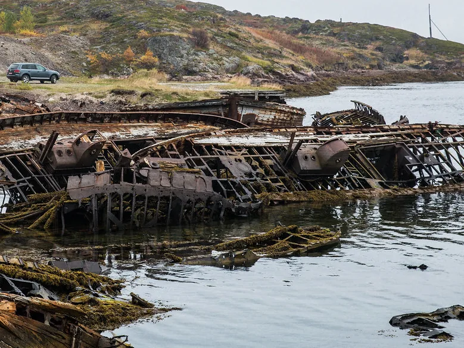
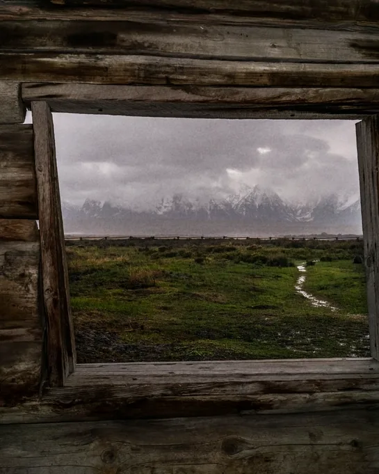
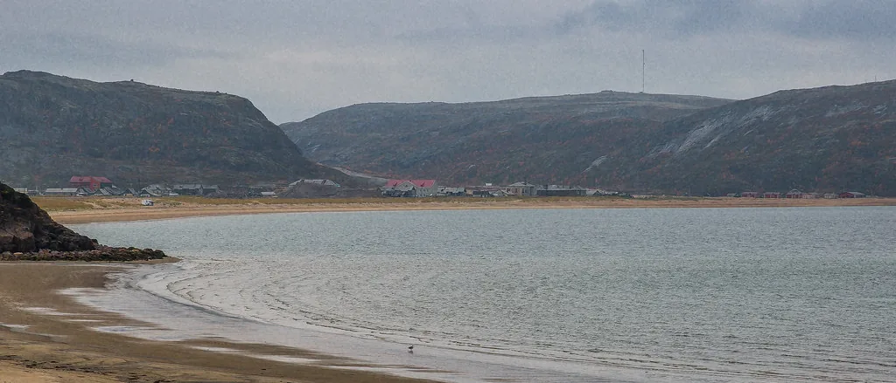
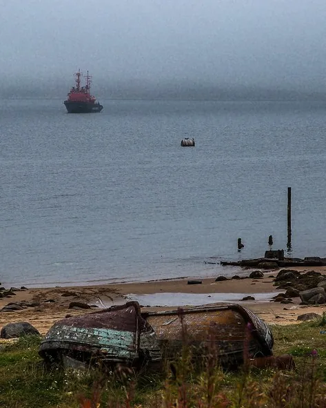
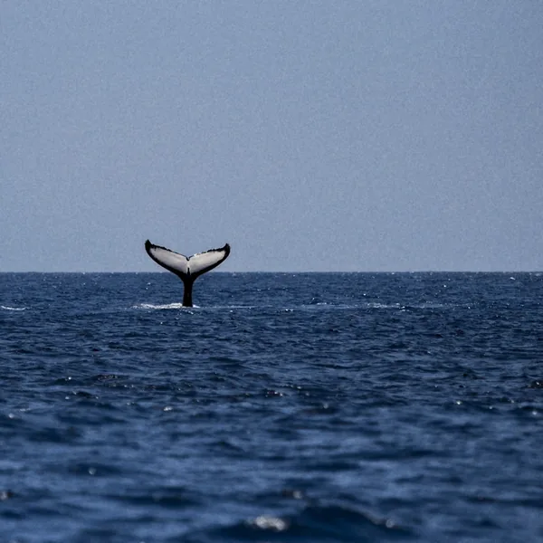

Бортовой журнал · запись первая69°09′ с. ш. · 35°08′ в. д.
Норманндом у Баренцева моря





двенадцать номеров, у каждого своё окно на море
сияние — с сентября по март
Отель на краю Кольского полуострова: сопки, сияние, киты и Баренцево море. 130 км от Мурманска.
Выбрать даты →Демо · фото Териберки: Ninara, CC BY 2.0 (Flickr) · кит: rawpixel, CC0